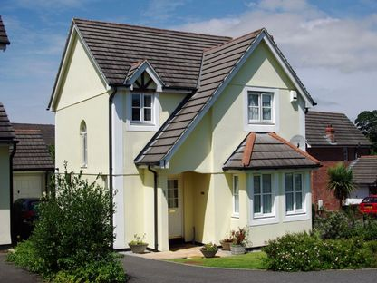

|

Primrose House, Fowey, Cornwall
A pleasant detached house within a 15 minute walk both to the town centre and to Readymoney Beach, with ample car parking and a garage also available.
- Convenient location for both the Eden Project and the Lost Gardens of Heligon
- Children and pets welcome, by arrangement
- Short-term lets are available for flexible durations, commencing at 3 nights. Online booking will be available shortly.
- There are 4 bedrooms available to accommodate up to 7 people - 1 double, 1 twin, 1 with bunk beds and 1 single. There are also 2 bath/shower rooms and 1 cloakroom.
- A pleasantly-decked and enclosed back garden with its own barbeque area is available for guests' use
- A Swedish log cabin which houses a fantastic spa suitable for up to 5 people, completes the entertainment package!
We aim to provide the conveniences of a hotel with the comforts and independence of a modern home (Unlimited wireless broadband can be provided at an extra daily charge of £2.50 per day by arrangement). Fowey is a bustling sailing port on the Fowey Estuary on the South Cornish coast, set in stunning countryside, with dramatic beaches nearby. Known for its sailing, walks, stunning views, and vibrant streets, Fowey is a gem in Cornwall. Inspiration to many of Daphne Du Maurier's dramatic stories it is home to the annual Du Maurier literary festival and the Royal sailing regatta.
|